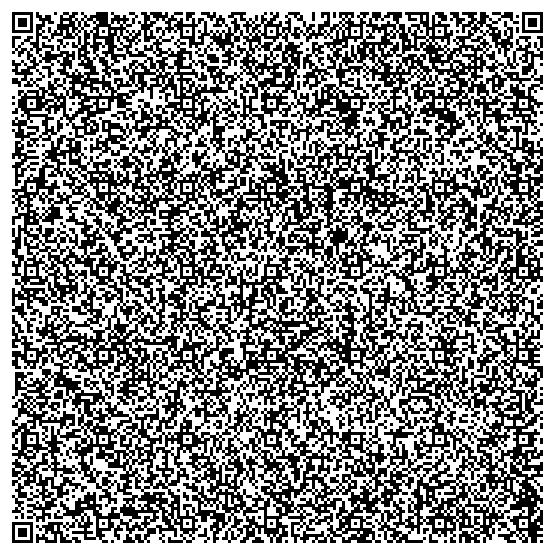
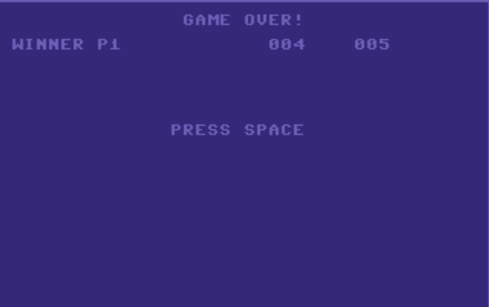

This is a Commodore 64 Tron port I made for Hackclub Say Cheese, a challenge where you have to make a program that fits into a QR code.
To play, you load the file as a disk into a Commodore 64 (or an emulator) and press space to start. Player 1 starts on the left and uses WASD to move, and player 2 starts on the right and uses IJKL to move. When someone loses, the game over screen shows who won and what the score is.
Here's the QR code: (it's big so I hid it by default)

And if you're lazy, here's the binary that's encoded in the QR code:
tron.bin
The main challenge of fitting a program in a QR code is that the maximum amount of data one can handle is only 2953 bytes. To put that into perspective, here are some comparisons: